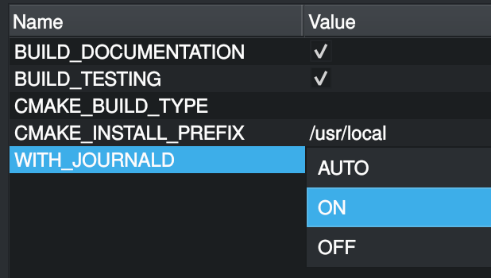

CMake¶
Introduction¶
List of CMake patterns/best practices.
Optional dependencies¶
Third party or platform-specific integrations are useful to represent as optional dependencies.
As someone who wants to quick-test a project, having interest in the core of the project, I prefer to have the optional dependencies auto-detected so that I can get started without being encombered by build issues or having to install system packages:
$ mkdir build
$ cd build
$ cmake ..
As a packager, or as a developer working on the optional feature, I want control of the detection, so that I can make sure the project works with (or without) it:
$ mkdir build
$ cd build
$ cmake -DWITH_FOO=ON ..
The pattern¶
Declare an option WITH_${INTEGRATION} with 3 possible value:
AUTO (the default), ON and OFF:
set(WITH_JOURNALD "AUTO" CACHE STRING
"Whether or not to support journald logging (this feature requires the systemd development package)")
set_property(CACHE WITH_JOURNALD PROPERTY STRINGS AUTO ON OFF)
Thanks to the use of cmake-properties(7) » STRINGS, the CMake UIs will complete the possible values, which is nice for discoverability:
ccmakewill cycle through the values when hittingEnter.
cmake-guiwill show a combo box:
{kind=link}
Later on, when resolving dependencies:
if (WITH_JOURNALD STREQUAL "AUTO")
pkg_check_modules(libsystemd IMPORTED_TARGET libsystemd)
# shadow origin value with ON/OFF,
# so journald-specific code just has to check:
# if (WITH_JOURNALD)
# ...
# endif()
if (libsystemd_FOUND)
set(WITH_JOURNALD ON)
else()
set(WITH_JOURNALD OFF)
endif()
elseif (WITH_JOURNALD) # ON
pkg_check_modules(libsystemd REQUIRED IMPORTED_TARGET libsystemd)
endif()
After we checked the special value AUTO,
we shadow the variable with a boolean value.
From now on, you can consider this option a boolean,
check it with if (WITH_JOURNALD), example:
if (WITH_JOURNALD)
set_property(
SOURCE src/log_backends.cpp
APPEND PROPERTY COMPILE_DEFINITIONS WITH_JOURNALD
)
target_link_libraries(foo PRIVATE PkgConfig::libsystemd)
endif()
All the CMake boolean values are also supported, not just ON/OFF,
e.g. -DWITH_JOURNALD=YES, -DWITH_JOURNALD=0, -DWITH_JOURNALD=TRUE.
This means it is safe to use replace boolean options like
option(WITH_JOURNALD, “…”)
to support this new AUTO value in a backward compatible way,
without breaking packagers explicit configurations.